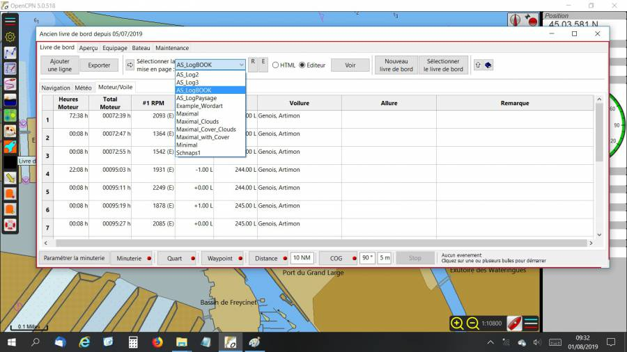
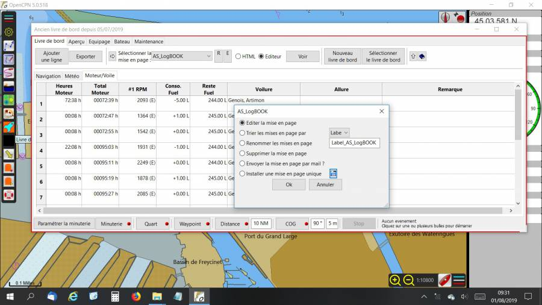
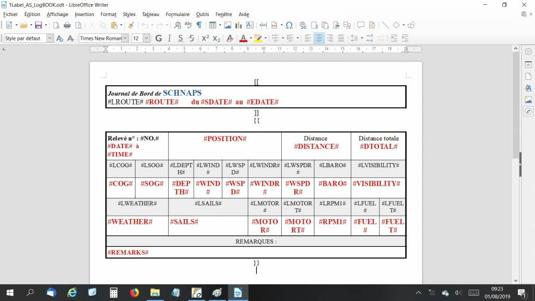
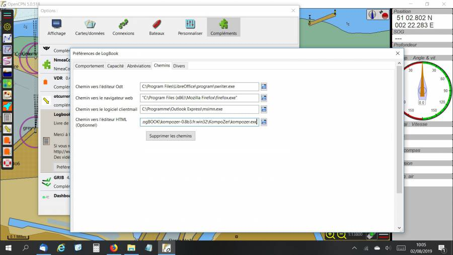
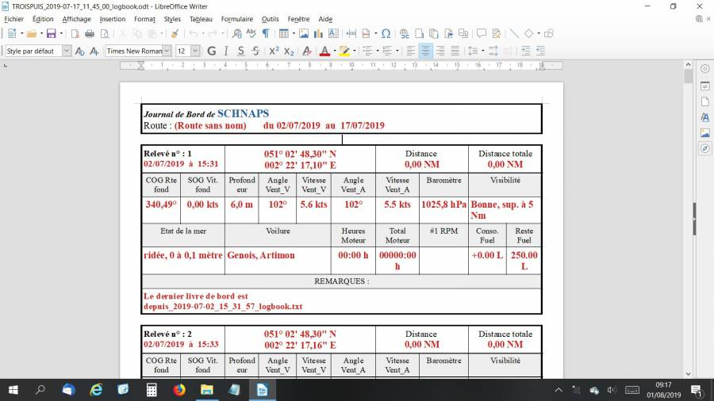
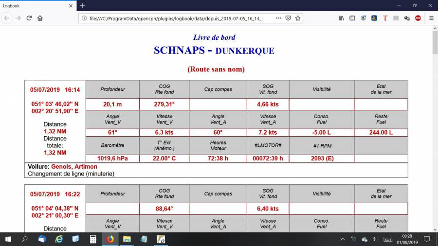

Logbook
Links
-
Source: Github Repository - Delatbabel
-
Alternative Maintenance Source: https://github.com/rgleason/LogBookKonni_pi
-
Releases: Github Releases
-
Download: Website Download
-
Forum: LogbookKonni CF Thread
1. What and Why
The Logbook plugin is useful for creating and maintaining many types of logs for your boat.
The plugin is now maintained by Del, Konnibe has been unable to continue development due to ill health.
2. Install
-
Install and Enable the plugin: Instructions
LogbookKonni is available as a managed plugin. The OpenCPN Manual has general information in Plugin Download, Install and Enable for installing this plugin. This is the preferred way.
In OpenCPN, go to the Options → Plugins and download, install and enable the LogbookKonni plugin (no settings are required).
-
First "Update" the master plugins catalog.
-
Select the Logbook entry and "Install" the plugin.
-
In the list of installed plugins "Enable" the sQuiddio plugin.
-
After successful installation, the plugin should be available in the plugins tab of your OpenCPN options dialog box.
3. Standard actions
An additional Layouts zip file is needed for the first install and should be downloaded through the official download page.
After downloading and installing the plugin, you can install the initial layouts.
-
Start OpenCPN
-
Select Options from the toolbar
and go to the Plugins tab. * Select the Logbook plugin * Click the Preferences button * In the dialog click “Install” below the label “Install Layouts” * In the file dialog select the file 'LogbookKonni_Layouts.zip'
Note that the layouts are customisable by the user and can be distributed to and shared with other OpenCPN logbook users. If you have developed a useful custom layout for your logbook then please feel free to send us details.
The logbook plugin contains an extensive help file which can be accessed by clicking on the little blue book when the logbook plugin is started. See RED circle in below picture.

4. Options
Setting preferences for the logbook is done in the Logbook Preferences dialog. You can get to this from the main OpenCPN Options
window, go to the Plugins tab, select the Logbook plugin and click “Preferences”
5. Use with GE2KAP
On GE2KAP website, select “Downloads” in the Menubar.
C2GPXKML - V4.0.2 New July. 31, 2015 Converts GPX, KML, SRW, Maxsea and Ozi formats. Supports Konni logbook plugin csv to combine track and logbook data.
Preference Pages
Here are the preference pages for Logbook. In the Help file (see above) all the fields are explained in detail.
6. Editing the LogBook
An illustration worth a thousand words, follow these screenshots.
1. The drop-down that allows you to choose the model that you want to modify / improve :

2. The window that allows you to launch the editor (LibreOffice or other), after clicking on E (editor), just click OK and if the path is correct (put the path in the logbook settings), LibreOffice or other opens automatically :

3. The model that can be modified at will (the labels start with L, as a label) and then save. Note the hooks and braces that must not be removed. Also note that by clicking on “View” in the Logbook, it is possible to continue to appreciate the changes made, after having saved the changes.

The manipulation is exactly the same for an edition in HTML (which can be saved in PDF) but a little more complex because it requires the use of a free soft specific KompoZer.exe. Note that the path to Kompozer must also be indicated in the LogBook Settings/preferences (last line). Note also that for LibreOffice, Swriter.exe should be specified and not writer.exe…

On youtube, you will find a brief tutorial that explains the first steps with KompoZer.exe (and the link to download this soft) : https://www.youtube.com/watch?v=iQEj9N-6Alg
As an example of what you can print: two screenshots, in ODT and in HTML …
in ODT :

and in HTML
